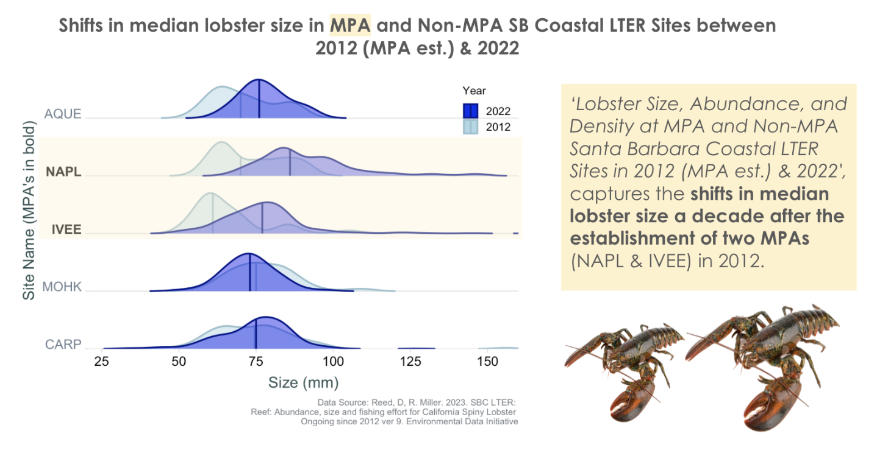
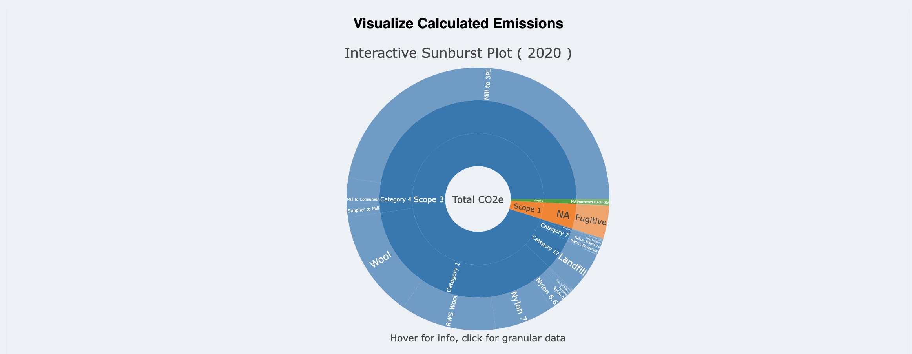

I will be updating this page with new visualizations as I create them. Stay tuned for more!

Visualizing MPA impact on lobster size | Blog
 Caption: Infographic displaying the shifts in median lobster size in Marine Protected Areas (MPA’s) and Non-MPA SB Coastal LTER Sites between 2012 & 2022. Data Source: Santa Barbara Coastal LTER. Visualization created in R and Google Suites.
Interactive Dashboard Visualization Plots
Interactive Sunburst Plot for Darn Tough, VT | Blog
 Caption: Interactive sunburst plot created for Darn Tough, VT allows users to analyze emissions in terms of Scope, Category (for Scope 3), and input variables (e.g., Wool Fiber). By clicking on a segment of the plot, users can more easily see the granular data. In addition, the user can hover over a segment to access exact values for emissions and percent of total emissions (Note: Fake Data). Visualization created in R and D3.js.
Scientific Plots
Facet Plots of Burn Severity Impacts on Snow Depth in Colorado’s Northern Range
Caption: Facet plots showing the impact of burn severity on snow depth in Colorado’s Northern Range. The plots show the relationship between snow depth and burn severity for each snow melt season. Data Source: Airborne Snow Observatories, LANDSAT8. Visualization created in R.
Geospatial visualization and Cartography
Visualizing Oyster Habitat Suitability on the West Coast US | Repo
Caption: Geospatial visualization of oyster habitat suitability on the West Coast of the US. The map shows the total area and % of oyster habitat based on sea surface temperature and depth. Data Source: NOAA, USGS. Visualization created in R.
Time Series Plots of Climate Variables in Southern Illinois
Caption: As part of my DEVELOP project with NASA, I created time series plots of climate variables in Southern Illinois (temperature, drought, precipitation). The plots show the average maximum summer drought stress across time. Data Source: GridMET 4km Daily SPI (90 day). Visualization created in R, data acquired from ClimateEngine.
White Oak Mortality Risk Map for Southern Illinois
Caption: As part of my DEVELOP project with NASA, my team and I developed a map of white oak mortality risk in Southern Illinois to support the Morton Arboretum. The map shows the risk of white oak mortality based on climate variables, topographic conditions, vegetation change, and proximity to commercial croplands. This map is meant to be viewed in a GeoPDF format. Visualization created in ArcGIS.
Visualizing Texas Blackout of 2021 | Blog
 Caption: Interactive plot created in R’s tmap package to visualize the Texas Blackout of 2021. The plot shows the number of households affected and median income level of census tract.
Caption: Interactive plot created in R’s tmap package to visualize the Texas Blackout of 2021. The plot shows the number of households affected and median income level of census tract.
Land for Maine’s Future: Conservation Grant Proposal
Caption: Map created for Land for Maine’s Future grant proposal. The map shows the location of the proposed land acquisition in relation to other protected lands and geographic features, as well as the proposed land’s ecological features. Map Created in ArcGIS Pro and presented with Google Suites.
Infographics
Visualizing Taiwan’s CO2e standing | Blog
Caption: Infographic of Taiwan’s current standing of carbon emissions. Graph types used include line, bar, and pie charts. Data Source: Climate Trace, OurWorldInData. Visualization created in R.
Caption: A closer look at Taiwan’s carbon emissions over time. Data Source: Climate Trace, OurWorldInData. Visualization created in R.
Stay tuned for more!